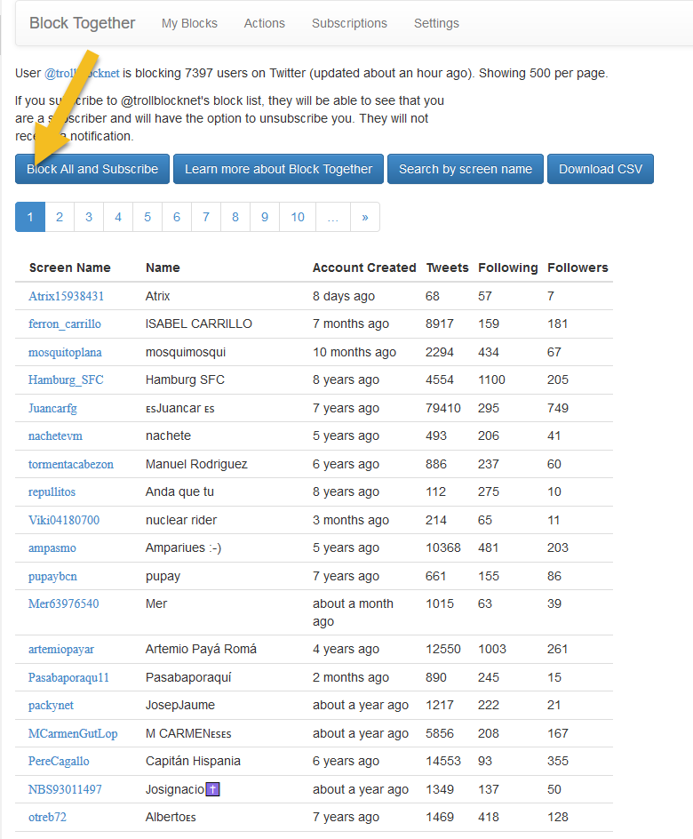
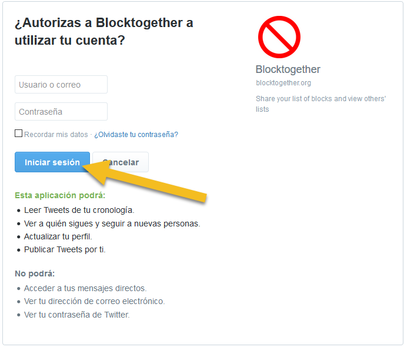
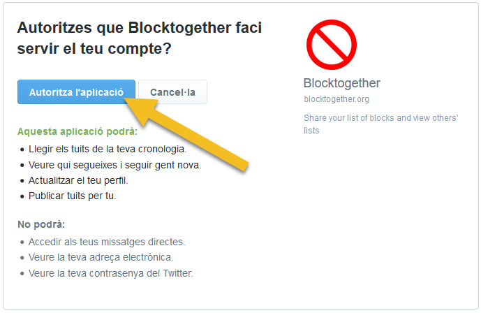
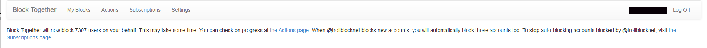

Per a que els perfils que tenim blocats en qualsevol de les nostres llistes passin a formar part de la teva llista de bloqueigs a Twitter, t’hi has de subscriure mitjançant els enllaços de subscripció indicats a la taula de llistat que trobaràs a la plana principal de @trollblocknet. Els passos que has de realitzar són els següents:
Ves a la taula de llistes que trobaràs a trollblocknet.cat i fes clic / toca el botó “subscriure-m’hi” de la llista a la que et vulguis subscriure. L’enllaç et dura al web de blocktogether.com que conté la app que utilitzem per a gestionar les subscripcions a les llistes de bloqueig.
A la plana web de Block Together clica / toca el botó “Block All and Subscribe” (Bloquejar tots i subscriure’s-hi):
Tot seguit has d’autoritzar l’app de Block Together per a que pugui accedir i gestionar el teu llistat de perfils blocats a Twitter. Se’t demanarà iniciar sessió a Twitter en el cas que no la tinguis ja iniciada (si fos aquest el cas, aniràs directament al pas 3B):
En cas que ja tinguessis iniciada la sessió només caldrà que cliquis / toquis el botó “Autoritza l’aplicació”:
Nota important: El missatge que indica “aquesta aplicació podrà llegir tuits de la teva cronologia, veure seguidors, actualitzar perfil o publicar tuits per tu” és un missatge genèric que Twitter incorpora al procés d’autorització de totes les apps basades en les API de Twitter amb el mateix nivell de permisos (n’hi ha 3: lectura, lectura+escriptura i lectura+escriptura+DM’s. Blocktogether opera al nivell de lectura+escriptura). En cap cas s’enviaran Tweets en nom teu o es realitzarà qualsevol altre acció a part de les de bloquejar els perfils inclosos en alguna de les nostres llistes. Si vols més informació consulta el web blocktogether.com (en anglès) o bé el seu perfil a Twitter @blocktogether, així com la documentació de Twitter al respecte dels nivells de permisos https://developer.twitter.com/en/docs/basics/apps/guides/app-permissions.html
Finalment rebràs el següent missatge de confirmació si no es produeix cap errada durant el procés d’autorització:
Traducció del missatge: Block Together blocarà ara XXXX usuaris en el teu nom. Aquesta operació pot trigar un temps en completar-se. Pots comprovar el progrés a la plana d’accions. A més, quan @trollblocknet bloqui nous perfils tu també els blocaràs de manera automàtica. Si en qualsevol moment vols deixar d’auto-blocar els perfils blocats per @trollblocknet, visita la plana de subscripcions.